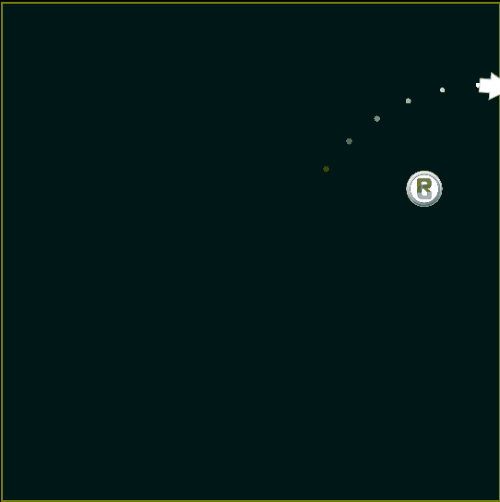

Actions Library (ssk.actions.*)
The actions library is a collection of helper modules and functions to do the heavy lifting associated with smooth facing, movement, screen-wrapping, and target acquisition.

This library is especially suited to action and arcade style game mechanics.
| Facing | Non-Physics Movement | |
|---|---|---|
| face | move.at | move.forward |
| Physics Movement | ||
|---|---|---|
| movep.dampDown | movep.dampHoriz | movep.dampNormal |
| movep.dampVert | movep.forward | movep.impulseForward |
| movep.limitV | movep.limitAV | movep.thrustForward |
| Scene | |
|---|---|
| scene.circWrap scene.rectWrap | target.acquireRandom |
Facing (face)
face
Causes obj to rotate towards a specific angle or target. The rate of rotation can be immediate or at a specified number of degrees-per-second (dps).
This function is typically called in an enterFrame listener and once used must be called every frame.
ssk.actions.face( obj, params )
obj- The object to be turned.params- A table of key-value pairs controling the facing algorithm.target- A display object or table withxandyfields.angle- A desired rotation angle to face towards.rate- A number specifying the degrees-per-second to turnobjby.- If set to
nilor not specified, facing is immediate.
- If set to
pause- Do not do any facing calculations during this call. Simply update the turn timer and exit.
Example:
function player.enterFrame( self )
-- Rotate to face the object `enemy` at a rate of 180 degrees-per-second
ssk.actions.face( self, { target = enemy, rate = 180 } )
end
Tip #1: While you must continue to call this function every frame after you first call it, you can pause the facing to temorarily suspend calculations. This is useful if you want obj to stop turning, of if you no longer have an angle/target to face.
Tip #2: If used in Combination with Target Acquisition functions, you don't need to provide a target. This will be handled for you.
Non-Physics Movement (move.*)
The actions move module provides functions to move object using 'calculated' movement in pixels-per-second.
move.forward
Move at a fixed rate, measured in pixels-per-second (pps), in the direction the object is facing.
ssk.actions.move.forward( obj, params )
obj- The object to be moved.params- A table of key-value pairs controling the movement algorithm.rate(100) - A number specifying the movement speed in pixels-per-second.
Example:
function player.enterFrame( self )
-- Move forward at 300 pixels-per-second
ssk.actions.move.forward( self, { rate = 300 } )
end
move.at
Move at a fixed rate, measured in pps, in an arbitrary < x, y > direction.
ssk.actions.move.at( obj, params )
obj- The object to be moved.params- A table of key-value pairs controling the movement algorithm.x(0) - A number specifiying the number of pixels-per-second by which to move in the x-axis.y(0) - A number specifiying the number of pixels-per-second by which to move in the y-axis.
Example:
function player.enterFrame( self )
-- Move 'right' at 300 pixels-per-second
ssk.actions.move.at( self, { x = 300 } )
end
Physics Movement (movep.*)
The actions movep module provides functions to move, limit, and dampen movement using 'calculatoins' and physics methods.
All objects moved with the movep module must have physics bodies.
movep.forward
Move obj foward at a fixed rate, measured in pixels-per-second, using frame-by-frame calculations and obj:setLinearVelocity().
ssk.actions.movep.forward( obj, params )
obj- The object to be moved.params- A table of key-value pairs controling the movement algorithm.rate(100) - A number specifying the movement speed in pixels-per-second.
Example:
function player.enterFrame( self )
-- Move forward using physics at a rate of 300 pixels-per-second
ssk.actions.movep.forward( self, { rate = 300 } )
end
movep.thrustForward
Move obj forward by applying a force using calculations and obj:applyForce().
ssk.actions.movep.thrustForward( obj, params )
obj- The object to be moved.params- A table of key-value pairs controling the movement algorithm.rate(100) - A number specifying the magnitude of the force to apply toobj.ignoreMass(false) - By default,rateis automatically multiplied by the object's mass. Setting this field totruebypasses that part of the calculation.
Example:
function player.enterFrame( self )
-- Move this object forward by applying a 100 units of force.
ssk.actions.movep.thrustForward( self, { rate = 100 } )
end
movep.impulseForward
Move obj forward by applying a impulses (kicks) using calculations and obj:applyLinearImpulse().
This is suitable for use in timed or intermittent movements and can produce some very intersting responses.
ssk.actions.movep.impulseForward( obj, params )
obj- The object to be moved.params- A table of key-value pairs controling the movement algorithm.rate(100) - A number specifying the magnitude of the impulse force to apply toobj.ignoreMass(false) - By default,rateis automatically multiplied by the object's mass. Setting this field totruebypasses that part of the calculation.
Example:
-- Apply 15 impulses (kicks) to player, one every 250 milliseconds
function player.timer( self )
ssk.actions.movep.impulseForward( self, { rate = 25 } )
end
timer.performWithDelay( 250, player, 15 )
movep.limitV
Limits an object's linear velocity to a maximum rate in pixels-per-second.
This is often used to place a cap on the maximum rate that can be produced using movep.thrustForward.
ssk.actions.movep.limitV( obj, params )
obj- The object whose rate is to be limited.params- A table of key-value pairs controling the movement algorithm.rate(100) - Maximum rate object may move at in pixels-per-second.
Example:
function player.enterFrame( self )
-- Accelerate this quickly using 500 units of force, but
-- limit the maximum velocity to 750 pixels-per-second
ssk.actions.movep.thrustForward( self, { rate = 500 } )
ssk.actions.movep.limitV( self, { rate = 750 } )
end
movep.limitAV
Limits an object's angular velocity to a maximum rate in degrees-per-second.
This is great for things like wheels and circles that turn due to frictional contact with other objects.
ssk.actions.movep.limitAV( obj, params )
obj- The object whose angular rate is to be limited.params- A table of key-value pairs controling the movement algorithm.rate(100) - Maximum angular rate object may turn at in degrees-per-second.
Example:
function player.enterFrame( self )
ssk.actions.face( self, { target = target, rate = 180 } )
end
movep.dampVert
This allows you to dampen linear velocity for just the vertical component of an object's movement.
ssk.actions.movep.dampVert( obj, params )
obj- The object whose angular rate is to be limited.params- A table of key-value pairs controling the damping algorithm.damping(1) - Damping factor for vertical component of movement.
Example:
function player.enterFrame( self )
ssk.actions.movep.dampVert( self, { damping = 1.5 } )
end
movep.dampHoriz
This allows you to dampen linear velocity for just the horizontal component of an object's movement.
ssk.actions.movep.dampHoriz( obj, params )
obj- The object whose angular rate is to be limited.params- A table of key-value pairs controling the damping algorithm.damping(1) - Damping factor for horizontal component of movement.
Example:
function player.enterFrame( self )
ssk.actions.movep.dampHoriz( self, { damping = 1.5 } )
end
movep.dampDown
This allows you to dampen linear velocity for just the downward (+y) component of an object's movement.
ssk.actions.movep.dampDown( obj, params )
obj- The object whose angular rate is to be limited.params- A table of key-value pairs controling the damping algorithm.damping(1) - Damping factor for postive vertical component of movement.
Example:
function player.enterFrame( self )
ssk.actions.movep.dampDown( self, { damping = 1.5 } )
end
movep.dampNormal
This is a very specialized kind of damping that dampens motion that is 90-degrees away from forward motion.
The easiest way to think of this is damping like a tire. Tires slow movement that is at cross angles to the tire's forward vector.
Note: Not available yet.
ssk.actions.movep.dampNormal( obj, params )
obj- The object whose angular rate is to be limited.params- A table of key-value pairs controling the damping algorithm.damping(1) - Damping factor for motion in the directions of either normal from the forward vector.
Example:
function player.enterFrame( self )
ssk.actions.movep.dampNormal( self, { damping = 1.5 } )
end
Scene Wrapping (scene.*)
Some action games use a single-screen world that wraps. That is, if a player or enemy leaves one side of the screen, they re-enter from the other side.
The helper functions in this action module help you achieve this.
scene.rectWrap
This helper will wrap one object about the bounds of a rectangle (any display object).
This seem strange at first, but by using a display object as the proxy for wrapping calculations, we have an easy way to define the wrapping space and well as an easy way to debug this.
ssk.actions.scene.rectWrap( objectToWrap, wrapRectangle )
objectToWrap- The object that should wrap about a 'wrapping space'.wrapRectangle- A display object to act as a proxy and define the 'wrapping space'.
Example:
-- Create a rectangle to act as our 'wrapping bounds'
local wrapProxy = display.newRect( display.contentCenterX, display.contentCenterY, 300, 300 )
-- Show it a little so we can see where the wrap should happen
wrapProxy.alpha = 0.1
-- Place a player in the center of the wrapProxy and give it a random velocity
local player = display.newCirle( wrapProxy.x, wrapProxy.y, 20 )
physics:addBody( player )
player:setLinearVelocity( math.random( -100, 100), math.random( -100, 100) )
-- Start an enter frame listener and test for wrapping each frame
function player.enterFrame( self )
ssk.actions.scene.rectWrap( self, wrapProxy )
end
Runtime:addEventListener( "enterFrame", player )
scene.circWrap
This helper is similar to rectWrap, but the wrapping is about a circular space and no proxy is required.
ssk.actions.scene.circWrap( objectToWrap, point, radius )
objectToWrap- The object that should wrap about a 'wrapping space'.point-<x,y>position of the 'wrapping circle'.radius- Radius of the 'wrapping circle'.
Example:
local cx = display.contentCenterX
local cy = display.contentCenterY
-- Place a player in the center of the screen and give it a random velocity
local player = display.newCirle( cx, cy, 20 )
physics:addBody( player )
player:setLinearVelocity( math.random( -100, 100), math.random( -100, 100) )
-- Start an enter frame listener and test for wrapping each frame
function player.enterFrame( self )
ssk.actions.scene.circWrap( self, { x = cx, y = cy }, 100 )
end
Runtime:addEventListener( "enterFrame", player )
Target Acquisition (target.*)
In action and arcade games, there is often the need for missiles, gun turrets, enemies, etc. to acquire a target and then chase it down.
The functions in this actions module handle the first half of that work (target acquisition), and you can code up the second half using the face function in combination with move or movep functions.
target.set
This function allows you to manually assign a target to an object.
ssk.actions.target.set( obj, newTarget )
obj- The object that will be seeking or tracking the target.newTarget- The new target for this object, ornilto clear the target.
Example:
-- Have the player start targeting enemy
ssk.actions.target.set( player, enemy )
target.get
This function allows you to manually get an object's current target.
Returns nil if the object has no current target.
ssk.actions.target.get( obj )
obj- The object that may be tracking a target.
Example:
-- Get the player's current target
local curTarget = ssk.actions.target.get( player )
target.acquireRandom
This chooses a random target from a target pool and assigns it to obj.
Returns true if a target was assigned, false otherwise.
ssk.actions.target.acquireRandom( obj, params )
obj- The object to assign a target to.params- A table of key-value pairs controling the targeting algorithm.targets- A table of targets.
Example:
ssk.actions.target.acquireRandom( self, { targets = targets } )
target.acquireNearest
This chooses the nearest target from a target pool and assigns it to obj.
Returns true if a target was assigned, false otherwise.
ssk.actions.target.acquireRandom( obj, params )
obj- The object to assign a target to.params- A table of key-value pairs controling the targeting algorithm.maxDist(math.huge) - The maximum distance at which a target is considered valid.targets- A table of targets.
Example:
ssk.actions.target.acquireRandom( self, { targets = targets } )
target.loseOnDestroyed
Tell obj to wipe its current target if that target has been destroyed and is no longer a valid display object.
Returns true if obj no longer has a valid target.
ssk.actions.target.loseOnDestroyed( obj )
obj- The object whose target we want to check.
Example:
function player.enterFrame( self )
-- Acquire a new random target if our last one was destroyed, or
-- if we don't have one yet.
if( ssk.actions.target.loseOnDestroyed( self ) ) then
ssk.actions.target.acquireRandom( self, { targets = targets } )
end
end
target.loseAtMaxDistance
Tell obj to wipe its current target if that target has moved beyond maxDist.
Returns true if obj no longer has a valid target.
ssk.actions.target.loseAtMaxDistance( obj )
obj- The object whose target we want to check.params- A table of key-value pairs controling the targeting algorithm.maxDist(math.huge) - The maximum distance at which a target is considered valid.
Example:
function player.enterFrame( self )
-- Acquire a new random target if our last one was destroyed, or
-- if we don't have one yet.
if( ssk.actions.target.loseAtMaxDistance( self, { maxDist = 200 } ) ) then
ssk.actions.target.acquireRandom( self, { targets = targets } )
end
end
target.loseAtMinAlpha
Tell obj to wipe its current target if that target's alpha is below alpha.
Returns true if obj no longer has a valid target.
ssk.actions.target.loseAtMinAlpha( obj )
obj- The object whose target we want to check.params- A table of key-value pairs controling the targeting algorithm.alpha(0.5) - The maximum alpha at which a target is considered valid.
Example:
function player.enterFrame( self )
-- Acquire a new random target if our last one was destroyed, or
-- if we don't have one yet.
if( ssk.actions.target.loseAtMinAlpha( self, { alpha = 0.1 } ) ) then
ssk.actions.target.acquireRandom( self, { targets = targets } )
end
end
target.loseNotVisible
Tell obj to wipe its current target if that target is not visible.
Returns true if obj no longer has a valid target.
ssk.actions.target.loseNotVisible( obj )
obj- The object whose target we want to check.
Example:
function player.enterFrame( self )
-- Acquire a new random target if our last one was destroyed, or
-- if we don't have one yet.
if( ssk.actions.target.loseNotVisible( self ) ) then
ssk.actions.target.acquireRandom( self, { targets = targets } )
end
end
target.drawDebugLine
This is a debug feature that draws a line between obj and its target.
ssk.actions.target.drawDebugLine( obj, params )
obj- The object that acts as the anchor for the line.params- A table of key-value pairs controling the targeting algorithm.parent- By default, the line is added todisplay.currentStagegroup, but you can specify a another group with this argument.
Example:
ssk.actions.target.drawDebugLine( self )
target.drawDebugDistanceLabel
This is a debug feature that draws a label showing the distance from obj to its target in pixels.
ssk.actions.target.drawDebugDistanceLabel( obj, params )
obj- The object that acts as the anchor for the line.params- A table of key-value pairs controling the targeting algorithm.parent- By default, the line is added todisplay.currentStagegroup, but you can specify a another group with this argument.xOffset(0) - The label's x-position isobj.x + xOffset.yOffset(0) - The label's y-position isobj.y + yOffset.
Example:
ssk.actions.target.drawDebugDistanceLabel( self, { yOffset = 40 } )
target.drawDebugAngleDistanceLabel
This is a debug feature that draws a label showing the distance from obj to its target in pixels, as well as the angle between obj forward and the target.
ssk.actions.target.drawDebugAngleDistanceLabel( obj, params )
obj- The object that acts as the anchor for the line.params- A table of key-value pairs controling the targeting algorithm.parent- By default, the line is added todisplay.currentStagegroup, but you can specify a another group with this argument.xOffset(0) - The label's x-position isobj.x + xOffset.yOffset(0) - The label's y-position isobj.y + yOffset.
Example:
ssk.actions.target.drawDebugAngleDistanceLabel( self, { yOffset = 40 } )
 Copyright © Roaming Gamer, LLC. 2008-2016; All Rights Reserved
Copyright © Roaming Gamer, LLC. 2008-2016; All Rights Reserved